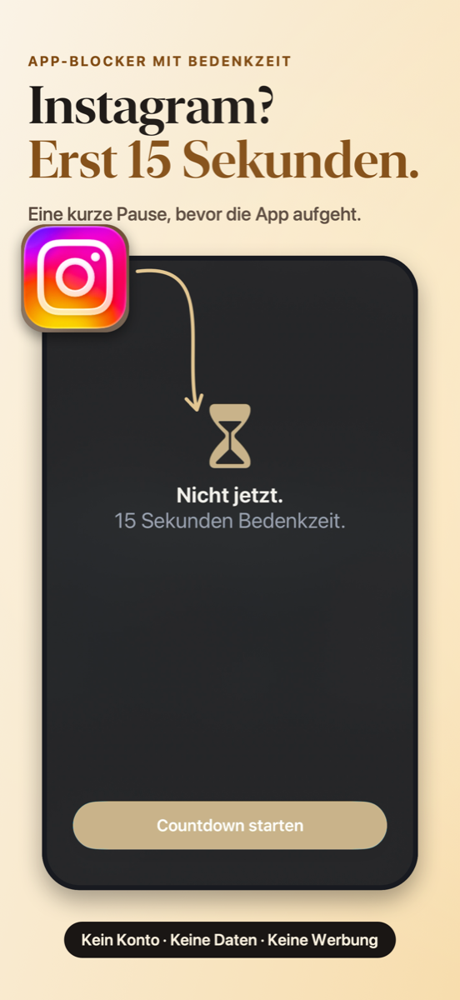
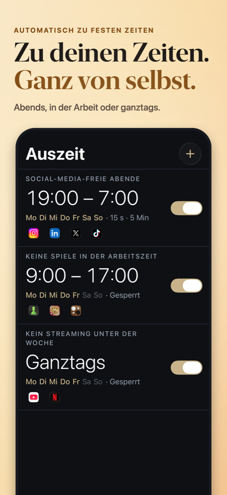
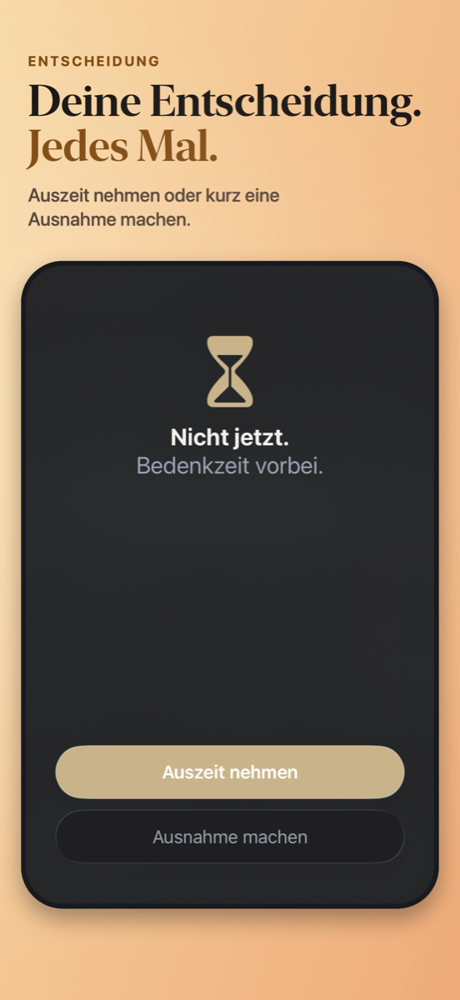
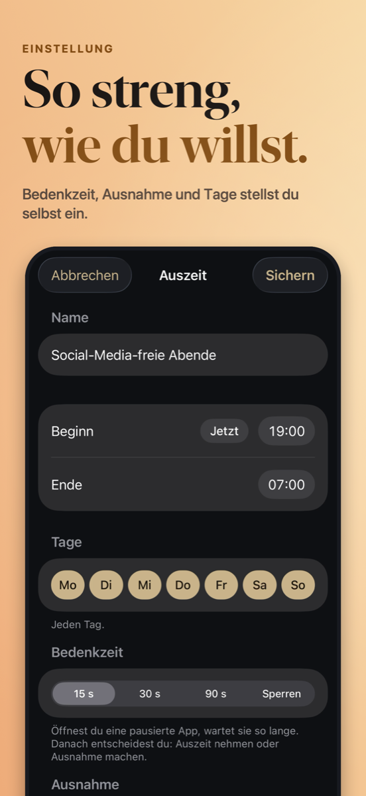
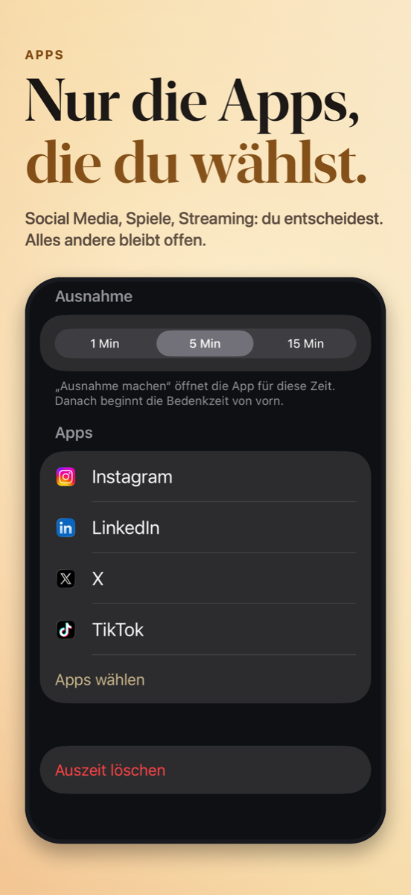
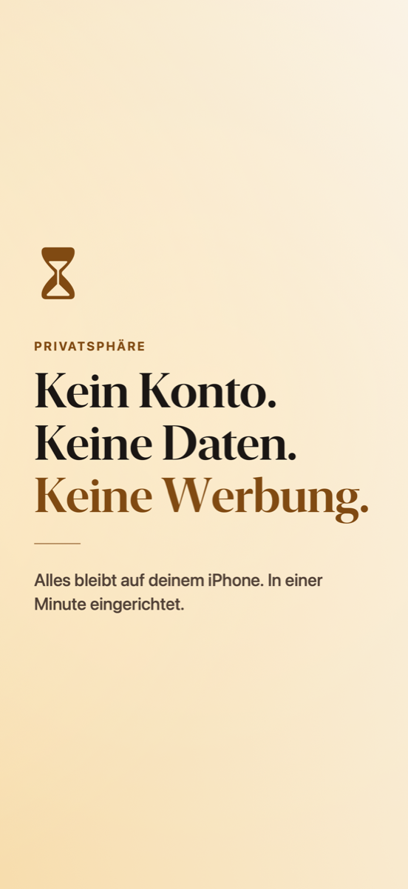

App-Blocker mit Bedenkzeit
Instagram? Erst 15 Sekunden.
Eine kurze Pause, bevor die App aufgeht.
App-Blocker für iPhone und Android
Auszeit hält die Apps, die dich abends festhalten, zu festen Zeiten an. Öffnest du eine davon, zeigt dein Handy zuerst eine kurze Bedenkzeit. Danach entscheidest du bewusst: Auszeit nehmen oder eine Ausnahme machen. Kein Verbot, keine Tricks, nur ein Moment zum Nachdenken.

Gratis. Auszeit Plus 9,99 € im Jahr oder 3,99 € im Monat (Preis in Österreich, Apple und Google rechnen je Land um, der genaue Preis steht in der App).






App-Blocker mit Bedenkzeit
Eine kurze Pause, bevor die App aufgeht.
Entscheidung
Auszeit nehmen oder kurz eine Ausnahme machen.
Apps
Social Media, Spiele, Streaming: du entscheidest. Alles andere bleibt offen.
Automatisch zu festen Zeiten
Abends, in der Arbeit oder ganztags.
So funktioniert es: Auf dem iPhone nutzt Auszeit die Bildschirmzeit von iOS. Auf Android nutzt Auszeit die Bedienungshilfe, die du einmal einschaltest. Ab dann greift die Bedenkzeit pünktlich, auch wenn Auszeit geschlossen ist.
iOS 17 oder neuer · nutzt die Bildschirmzeit
Android 8.0 oder neuer · nutzt die Bedienungshilfe
Einstellung
Bedenkzeit, Ausnahme und Tage stellst du selbst ein.
0 €
Eine Auszeit mit bis zu zwei Apps, 15 Sekunden Bedenkzeit und 5 Minuten Ausnahme.
9,99 € im Jahroder 3,99 € im Monat
Preise in Österreich; Apple und Google rechnen je Land um, der genaue Preis steht in der App. Plus gibt es als Jahres- oder Monatsabo. Das Abo verlängert sich automatisch, bis du es kündigst: auf dem iPhone in den Einstellungen unter Apple-Account › Abos, auf Android in Google Play unter Zahlungen und Abos. Ein Abo gilt nur für die Plattform, auf der du es gekauft hast.
Privatsphäre
Kein Account, kein Server, keine Analyse. Alles bleibt auf deinem Handy.
Welche Apps du wählst, speichert Auszeit nur als verschlüsselte Kennungen von iOS. Den Namen einer App bekommt allein der Schirm, um ihn anzuzeigen. Auszeit sieht nicht, wie lange du Apps nutzt, und zeichnet nichts auf.
Auszeit nutzt die Bedienungshilfe von Android nur, um zu erkennen, welche App gerade vorn ist, und legt dann die Bedenkzeit darüber. Sie liest keine Bildschirminhalte, sieht nicht, was du tippst, und zeichnet nichts auf. Auszeit sieht nicht, wie lange du Apps nutzt.
Nein. Die Auszeit in Apples Bildschirmzeit sperrt Apps zu festen Zeiten. Die App Auszeit nutzt die Bildschirmzeit als Grundlage und setzt eine Bedenkzeit mit Entscheidung davor, statt eines Verbots: Auszeit nehmen oder eine Ausnahme machen. Auszeit ist eine eigene App von nxtChange Consulting FlexCo, nicht von Apple.
Nein. Du legst das Zeitfenster selbst fest, zum Beispiel 21:00 bis 07:00, an den Tagen, die du willst: abends, in der Arbeit oder ganztags. Gratis gilt eine Auszeit; mit Auszeit Plus kommen weitere dazu, etwa fürs Wochenende.
Ein Android-Handy ab Android 8.0 und die Bedienungshilfe von Android, die du einmal in den Einstellungen einschaltest. Auf Android gibt es keine Bildschirmzeit-Schnittstelle für andere Apps, und ohne Geräteadministrator oder Unternehmensprofil keinen anderen Weg, zu festen Zeiten eine Bedenkzeit über eine andere App zu legen.
Auszeit nutzt die Bedienungshilfe nur, um zu erkennen, welche App gerade vorn ist, und legt dann die Bedenkzeit darüber. Sie liest keine Bildschirminhalte, sieht nicht, was du tippst, und zeichnet nichts auf. Bevor die App dich zum Einschalten in die Einstellungen führt, erklärt sie dir das in einem Dialog.
Nein. Kein Account, kein Server, keine Analyse: Alles bleibt auf deinem Handy. Auf dem iPhone speichert Auszeit die gewählten Apps nur als verschlüsselte Kennungen von iOS; den Namen einer App bekommt allein der Schirm, um ihn anzuzeigen. Auf Android verarbeitet die Bedienungshilfe nur den Paketnamen der App, die gerade vorn ist, und speichert ihn nicht. Auszeit sieht nicht, wie lange du Apps nutzt, und zeichnet nichts auf.
Ja. Auszeit ist ein Hilfsmittel, kein Schutz vor dir selbst. Jede Auszeit lässt sich jederzeit ausschalten. Wer es strenger will, stellt mit Auszeit Plus eine Bedenkzeit von 30 oder 90 Sekunden ein oder sperrt die Apps ganz bis zum Ende der Auszeit.
Auszeit ist gratis, mit einer Auszeit für bis zu zwei Apps, 15 Sekunden Bedenkzeit und 5 Minuten Ausnahme. Auszeit Plus kostet 9,99 € im Jahr oder 3,99 € im Monat (Preis in Österreich, Apple und Google rechnen je Land um, der genaue Preis steht in der App). Das Abo verlängert sich automatisch, bis du es kündigst.
Nein. Auszeit pausiert Apps, keine Webseiten. Ob Mitteilungen einer pausierten App erscheinen, entscheidet das System.
Auf dem iPhone mit iOS 17 oder neuer und auf Android-Handys ab Android 8.0. Auszeit gibt es im App Store und bei Google Play, auf Deutsch und Englisch.
Material für Berichte, ohne Rückfrage verwendbar. Fragen und Testzugänge: apps@nxtchange-consulting.com
Auszeit ist eine App für iPhone und Android aus Graz, die gewählte Apps zu festen Zeiten anhält und eine kurze Bedenkzeit dazwischenschiebt. Nutzer entscheiden danach bewusst: Auszeit nehmen oder eine Ausnahme machen. Auf dem iPhone nutzt Auszeit die Bildschirmzeit, auf Android die Bedienungshilfe. Die App braucht kein Konto, keinen Server und keine Analyse; alle Daten bleiben auf dem Gerät. Auszeit ist gratis mit einer Auszeit für bis zu zwei Apps, Auszeit Plus erweitert den Umfang. Anbieter ist nxtChange Consulting FlexCo.
Pressemappe ladenZIP mit allen 14 Dateien, 17,7 MB
Gründer
Gründer und Entwickler von Auszeit · nxtChange Consulting FlexCo, Graz
Karl Maier, Unternehmensberater aus Graz, hat Auszeit Anfang Oktober 2026 für iPhone und Android veröffentlicht: als Ein-Personen-Projekt ohne Investoren, über seine nxtChange Consulting FlexCo. Der Anlass war persönlich.
„Oft wollte ich nur kurz in Instagram schauen, und dann waren zwei Stunden weg.“
Auszeit unterbricht diesen Reflex. In einem frei wählbaren Zeitfenster, meist abends, auf Wunsch rund um die Uhr, kommt vor ausgewählten Apps zuerst eine kurze Pause mit Countdown. Danach entscheidet man bewusst: Auszeit nehmen oder eine Ausnahme machen. Kein Konto, kein Server, kein Tracking.
Zitat und Text sind für Berichte frei verwendbar.